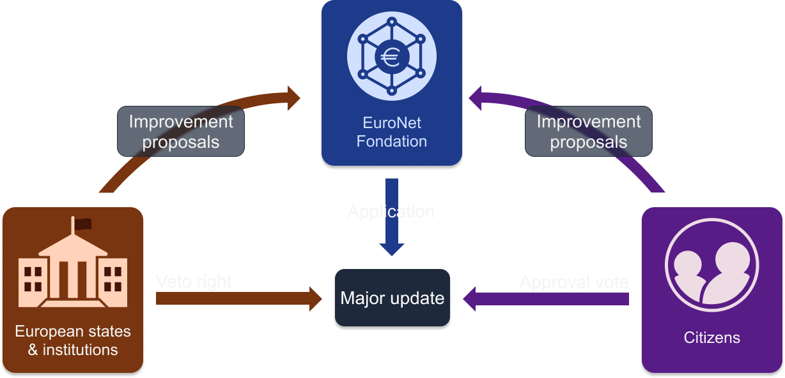
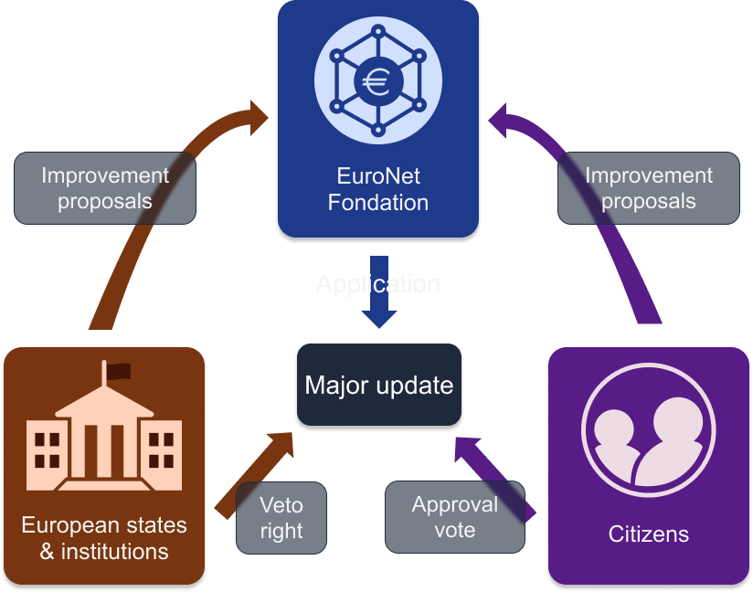

A European, sovereign solution, aimed at creating trust between citizens, public institutions, companies and NGOs through secure and unalterable information, accessible to all.
Do you want to control the use of public money by yourself ?
Access public finances in real time and conduct the investigation.
Do you want to contribute to democratic life ?
Come and take an active part in democratic life on your citizen's space and express yourself on societal issues.
Tired of endless procedures?
Simplify your life using a single interactive platform for all your administrative procedures.
Burdened by your identity documents?
Have your identity documents and certificates in dematerialized format.
Transfers too slow? Card payments refused under €5?
Make free instant transactions 24/7 from as little as €0.01 anywhere in Europe.
Too many different tickets?
Buy your e-tickets and e-ticketing on a single application and travel easily anywhere in Europe.
Do you want to combat the growing mistrust of public institutions and prove that public money is being used wisely?
Use EuroNet's services to ensure real-time transparency of public accounts (excluding defense secret sectors), enabling everyone to know how public money is being used and reinforcing confidence in public institutions.
Do you want to improve the accessibility and user experience of public services?
Deploy your services on an interactive web3 platform (a decentralized web that allows users to control their own data) to group together public services and facilitate their access by citizens.
Would you like to strengthen democracy within your institution?
Use "Agora" platform to facilitate the emergence of citizen proposals, citizen consultations and electronic voting, while guaranteeing the anonymity of votes.
Is counterfeiting a problem that impacts your business, damages your brand image or puts your customers at risk?
Euronet offers a product traceability solution, verifiable by all, enabling you to trace a product throughout its entire life cycle to protect your company and your customers.
Are you a merchant who has to pay a fee for each transaction and doesn't accept cards under a certain amount?
EuroNet offers a cost-effective payment and billing solution with no transaction fees. Receive instant payment from your customers from as little as €0.01, with no intermediary fees.
Need a robust infrastructure to manage certificate authenticity?
EuroNet offers a solution for managing and verifying the authenticity of documents, particularly intellectual property and certificates.
Do you need to automate money transfers with your customers and suppliers?
EuroNet offers a secure infrastructure that enables money transfers to be programmed without the need for a trusted third party.
Are you an organization that allows donors to benefit from tax exemption?
Be totally transparent and provide real-time access to your organization's finances to justify that this money is not going into public coffers.
Need a software infrastructure to easily manage your non-profit organization's cash flow?
Take advantage of EuroNet's payment and invoicing solution, totally free of charge for non-profit organizations.
Need to easily prove an organization's accreditations?
EuroNet's infrastructure enables you to manage certificates, accreditations and labels, and easily prove their authenticity.
68%[1]
of EU citizens believe that corruption is widespread in public institutions.
According to the OECD's "Trust in government" indicator, on average less than 50%[2] of EU citizens have confidence in their government.
The loss of trust and mistrust in public institutions is a major threat to our democratic system. The OECD's "Trust Survey Report"[3] published in July 2022 proposes a number of areas for improvement to restore trust in institutions:
It is in this context that the EuroNet project was born, a technical response to the problems outlined above. The objectives are :
The EuroNet network will be built using blockchain technology. It is an innovative technology with high standards of security, transparency and resilience. The blockchain allows the construction of a computer network for the storage and transmission of information in the form of transactions in an indelible ledger that can be consulted by all. The blockchain consists of computer servers, called nodes, which store and validate information on the network. These nodes have their own ledger and are distributed in different places (distributed network) and hosted by different actors (in our case, public institutions, companies and citizens).
Blockchain is designed to embody trust in the digital space. This is why the EuroNet project is being built with this technology while excluding the speculative and energy-consuming aspects that are often associated with it.
The blockchain can be seen as a shared account book, accessible to all, in which it is impossible to erase information. In order to prevent fraudulent modification of information, half of the nodes will be held by public institutions and private actors in highly secure locations and the other half will be held by anonymous citizens in unknown locations.
This distribution of nodes protects against :
Thus, by ensuring the integrity of the network, all actors protect each other and strengthen European cooperation and solidarity. The information on the blockchain is therefore unalterable, consolidating, in fact, the confidence that one can have in this data.
To ensure that the system is fully compliant with the functionalities presented to the general public, the source code of the system will be open source, aimed at preventing the addition of functionalities contrary to the general interest. In addition, the open source nature offers a considerable advantage, engaging the technology communities to continuously improve the robustness of the source code.
The consultation of information on EuroNet is open to all and only requires an internet connection to consult the ledger.
To benefit from the personalized services offered by the deployment of EuroNet, users will have to create an account. They will then be able to access the services via an application for Smartphone, a web platform or a web extension.
The blockchain will be maintained by the EuroNet Foundation. Its mandate will be to provide software updates for the blockchain, as well as the proper functioning and maintenance of the nodes.
The network will be co-managed by citizens and public institutions. Users will be able to submit suggestions for improvement. Public institutions will have a right of veto and must use it if the security of the network is impacted. During a major update (Hard-Fork), a representative citizen consultation will vote to approve the changes brought by the update. This vote must imperatively be preceded by reports on the test network (testnet), audits made public and expert support in order to better inform the choices of citizens. In case of disapproval, the update cannot be done.
 
In order to fight against money laundering and the financing of terrorism (AML-CFT standard), a Euronet account may be frozen on a decision of justice whose evidence must be provided on the blockchain. This process will involve citizens as jurors to avoid authoritarian abuses.
EuroNet aims to be a sovereign solution: it is therefore excluded to develop an infrastructure on a network secured by private financial interests and whose security varies with the price of the underlying asset. It is planned, however, to be able to connect the EuroNet network with other blockchains.
Transactions made by individuals will be encrypted to protect privacy. Only the transaction ID will be visible. The amount, sender and recipient will be encrypted. Similarly, business transactions will also be encrypted to protect professional secrecy.